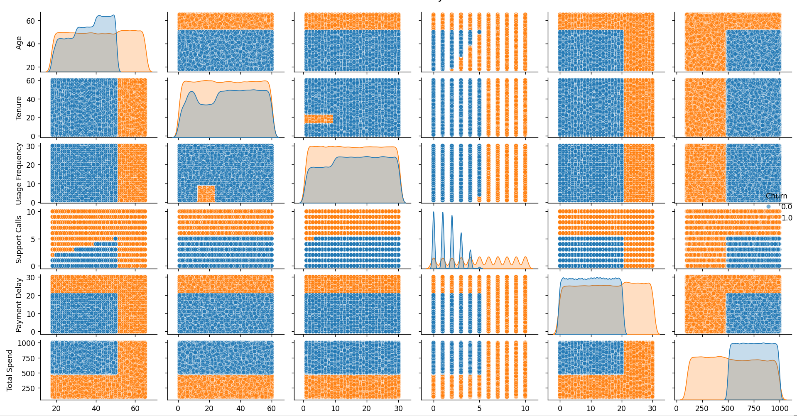

Dataset Overview
Our analysis is based on a customer churn dataset with the following columns:
Data Visualizations
Correlation Heatmap
The correlation heatmap shows relationships between variables. Stronger correlations are indicated by darker colors.
Churn Distribution by Subscription Type
This pie chart illustrates the distribution of subscription types among churned customers.
Usage Frequency vs Total Spend

This scatter plot demonstrates the relationship between usage frequency and total spend, with points colored by churn status.
Total Spend by Subscription Type
This box plot shows the distribution of total spend for each subscription type.
Age Distribution

This histogram displays the age distribution of our customers.
Churn Rate by Contract Length
This bar plot illustrates how churn rate varies by contract length.
Key Insights
Conclusion
Based on our analysis, we can conclude that:
To reduce churn, consider implementing targeted retention strategies for at-risk segments, encouraging upgrades to premium plans, and promoting longer contract lengths.